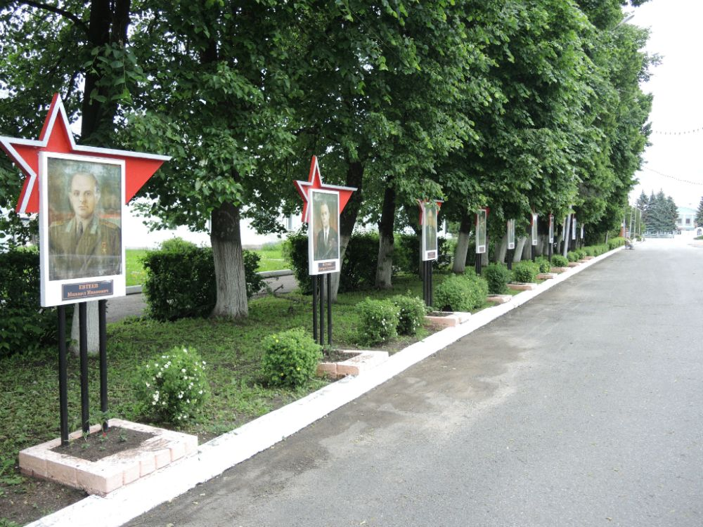

Места нашей области, посвящённые Великой Победе
 Домой
Домой
Аллея воинской славы (Становое)
Аллея воинской Славы, посвященная Героям Советского Союза – становлянцам, совершившим подвиги в годы Великой Отечественной войны, была открыта в мае 2001 года. Аллею образует ряд стендов с портретами прославленных воинов. На момент создания Аллеи портретов было девять. В 2014 году галерею пополнил портрет Героя Советского Союза Михаила Андреевича Шаховцева. Имя героя – земляка из с. Семенёк Михайловского сельского поселения было найдено по прошествии многих десятилетий благодаря усилиям тульского краеведа из г. Щекино Валентина Огнева (уроженца Становлянского района) и липецкого краеведа Анатолия Березнева. Торжественное открытие портрета М. А. Шаховцева состоялось 26 июля 2014 года, в день праздничного мероприятия, посвященного 86–й годовщине образования Становлянского района.
Аллея Славы представляет собой ряд стендов с портретами десяти Героев Советского Союза и двух Героев России (С. И. Пятницких и В. А. Тинькова).
Изображения:
